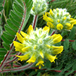
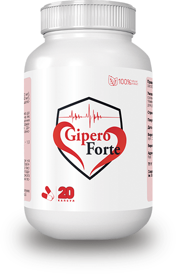
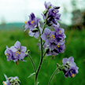
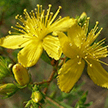
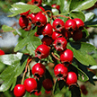
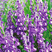
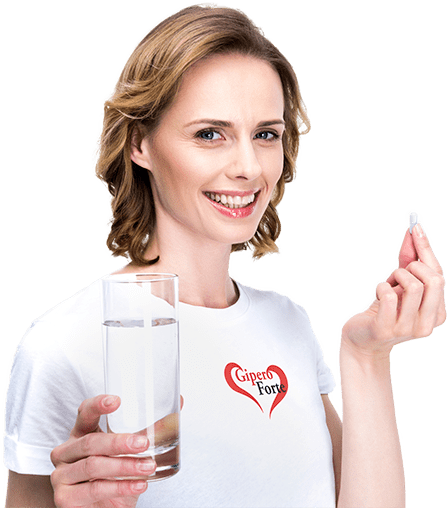

GiperoForte - препарат на натуральной основе, обеспечивает снижение
высокого артериального давления и улучшает работу сердечно-сосудистой системы. Препарат укрепляет сосуды,
оздоравливает сердечную мышцу, улучшает кровоток, снижает уровень токсинов в организме.
Рекомендации по применению
Рекомендуется применять препарат для:
улучшения мозгового и перефирического кровообращения
нормализации функционирования сердечно-сосудистой системы
снижения показателей артериального давления
Состав GiperoForte
Пустырник
Препараты пустырника усиливают процессы торможения или уменьшают процессы возбуждения в
центральной нервной системе, облегчают засыпание и углубляют естественный сон, способствуют н
ормализации артериального давления, имеют умеренное кардиотоническое действие.

Астрагал шершистоцветковый
Препараты из травы астрагала шершистоцветкового стимулируют работу сердца, особенно
при усталости, замедляют ритм сердечных сокращений, расширяют сосуды ряда внутренних
органов и умеренно снижают артериальное давление. Астрагал расширяет коронарные
сосуды, питающие сердце и сосуды почек, ускоряет кровообращение, оказывает мочегонный эффект.


Синюха голубая
в корневищах и корнях содержит тритерпеновые сапонины (20-30%), смолу (1,28%), органические
кислоты, жирные и летучие масла. Сапонины обладают высокой гемолитической активностью.
Синюха голубая очищает сосуды от жировых и минеральных отложений, атеросклероза.
Благодаря биоактивным веществам синюху применяют для лечения нервных расстройств, судорог, бессонницы.
Одуванчик
Обладает кровоочистительной функцией, что улучшает состав крови, увеличивает число
белых (лейкопения) и красных (анемия) кровяных телец. Оказывает гипотензивное,
антиоксидантное, тонизирующее, бактерицидное действие. Ускоряет выздоровление после
тяжелых инфекций, травм, операций, стрессов, при весенней усталости. Имеет также свойства,
повышающие тонус при половой слабости и выступает как регулятор обменных процессов.

Зверобой
Препараты из травы астрагала шершистоцветкового стимулируют работу сердца, особенно
при усталости, замедляют ритм сердечных сокращений, расширяют сосуды ряда внутренних
органов и умеренно снижают артериальное давление. Астрагал расширяет коронарные
сосуды, питающие сердце и сосуды почек, ускоряет кровообращение, оказывает мочегонный эффект.

Боярышник
Имеет мягкое кардиотоническое, антиоксидантное, антиаритмическое, антитиагрегатное и
спазмолитическое действие. Кроме этого он улучшает кровоснабжение и функциональноесостояние
сердечной мышцы, ее сократительную и насосную функцию, увеличивает чувствительность
миокарда к сердечным гликозидам, снижает повышенное артериальное давление и нормализует
частоту сердечных сокращений.

Шлемник Байкальский
оказывает гипотензивное действие путем угнетения проведения возбуждения в симпатических
ганглиях, что приводит к снижению артериального давления. Наделен легким мочегонным
действием, а флавоноиды растения проявляют седативное, противосклеротическое и антитромботическое действие. Дополнительно снимает боли
в области сердца, устраняет головные боли, улучшает самочувствие и работоспособность.
Способ применения

взрослым по 1 капсуле 2-3 раза в день за 30 минут до еды, запить водой, обязательно
наблюдая за показателями артериального давления в течение дня
Курс приема 8-12 недель
в дальнейшем срок употребления и возможность повторного курса согласовывать с врачом
Перед применением необходима консультация врача
Противопоказания
индивидуальная непереносимость отдельных компонентов продукта;